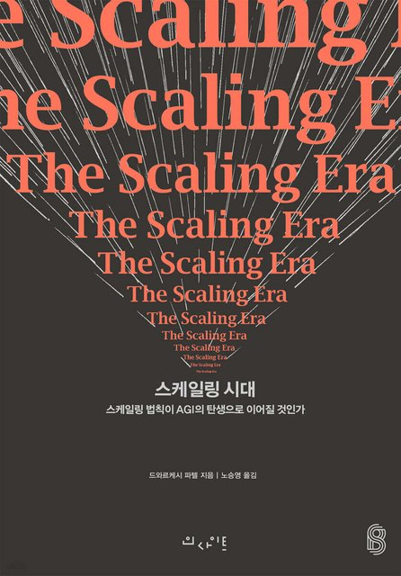
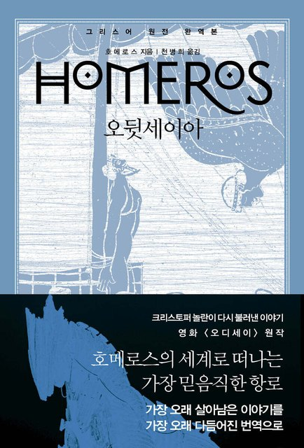
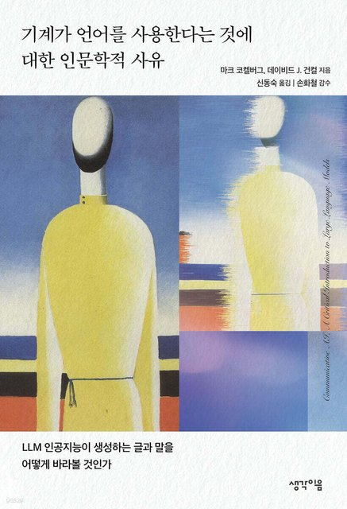
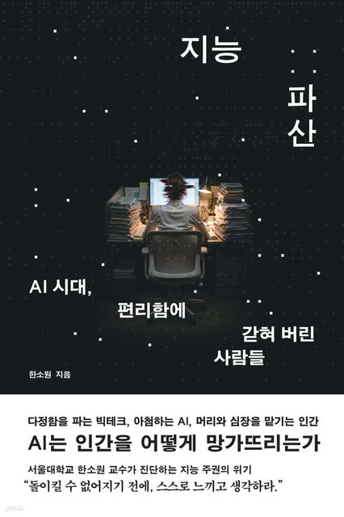
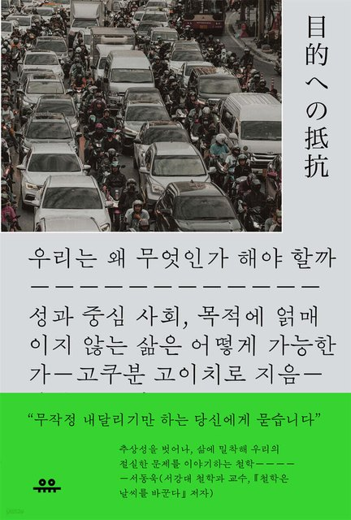

디퍼의 한 달
디퍼 언브랜딩살롱 2기 · 수사의 달 · 3기 · 논리의 달 · 4기 · 문법의 달
디퍼 리딩 여섯 밤 · 토요일 오프 번개 · 디퍼 콤포스텔라 1기 1구간 완주 → 2구간 피스테라
2026. 10. 1 (THU) — 2026. 10. 31 (SAT)
| 일 | 월 | 화 | 수 | 목 | 금 | 토 |
|---|---|---|---|---|---|---|
9/27 |
9/28 콤포스텔라 ③ 오전 10~12시 |
9/29 |
9/30 |
10/1 |
10/2 |
10/3 개천절 |
10/4 |
10/5
개천절 대체공휴일
콤포스텔라 ④ · 1구간 프리미티보 완주
오전 10~12시 수사 1회차 · 선율 — 명명
밤 8시 · 줌 — 9시부터 사막별 특강 |
10/6 |
10/7
디퍼 리딩 ①
『스케일링 시대』 밤 9~10:30 · 전체 디퍼 |
10/8
4기 문법 1회차 · 개강
밤 8~9:30 · 줌 — 30일 여정 시작 3기 논리 1회차 · 개강
밤 9:30~11시 · 줌 |
10/9 한글날 |
10/10 오프 번개 오후 2시 · 강남 이디야 커피랩 |
|
10/11
디퍼 리딩 ②
『오뒷세이아』 제5·6권 밤 9~10:30 · 전체 디퍼 |
10/12
콤포스텔라 ⑤ · 2구간 피스테라 시작
오전 10~12시 수사 2회차 · 변주 — 채널
밤 8시 · 줌 — 9시부터 사막별 특강 |
10/13 |
10/14
디퍼 리딩 ③
『기계가 언어를 사용한다는 것에 대한 인문학적 사유』 밤 9~10:30 · 전체 디퍼 |
10/15
4기 문법 2회차
밤 8~9:30 · 줌 3기 논리 2회차
밤 9:30~11시 · 줌 |
10/16 |
10/17 오프 번개 오후 2시 · 강남 이디야 커피랩 |
10/18 |
10/19
콤포스텔라 ⑥
오전 10~12시 수사 3회차 · 일관성 — 편집
밤 8시 · 줌 — 9시부터 사막별 특강 |
10/20 |
10/21
디퍼 리딩 ④
『지능 파산』 밤 9~10:30 · 전체 디퍼 |
10/22
4기 문법 3회차
밤 8~9:30 · 줌 3기 논리 3회차
밤 9:30~11시 · 줌 |
10/23 |
10/24 오프 번개 오후 2시 · 강남 이디야 커피랩 |
|
10/25
디퍼 리딩 ⑤
『오뒷세이아』 제7·8권 밤 9~10:30 · 전체 디퍼 |
10/26
콤포스텔라 ⑦
오전 10~12시 수사 4회차 · 하모니 — 매니페스토 · 종강
밤 8시 · 줌 — 9시부터 사막별 특강 · 끝 30분, 이수자가 여는 방 소개 |
10/27 |
10/28
디퍼 리딩 ⑥
『우리는 왜 무엇인가 해야 할까』 밤 9~10:30 · 전체 디퍼 |
10/29
4기 문법 4회차 · 수료
밤 8~9:30 · 줌 3기 논리 4회차 · 종강
밤 9:30~11시 · 줌 |
10/30 |
10/31 오프 번개 오후 2시 · 강남 이디야 커피랩 |
이달의 책 — 디퍼 리딩 여섯 밤
수요일 밤 9시 · 일요일 밤 9시 · 90분 · 전체 디퍼9월에 『마침내 특이점이 시작된다』와 『생각하는 기계』로 기계 쪽을 읽었으니, 10월은 사람 쪽으로 돌아옵니다. 만드는 사람들의 속기록에서 시작해 기계의 말, 맡기면 사라지는 것, 그래도 왜 하는가로 내려옵니다. 사이사이 일요일엔 오뒷세우스가 집으로 가는 길을 두 권씩 걷습니다. 읽은 만큼 오시면 됩니다. 사실을 다지고, 해석을 나누고, 마지막 몇 분에 각자의 평가를 남기는 소크라테스식 세미나입니다.

스케일링 시대
AI를 만드는 사람들이 마이크 앞에서 "우리도 아직 모른다"고 말하는 순간을 읽습니다. 데이터와 연산을 더 넣으면 왜 똑똑해지는지, 만든 사람도 답을 못 합니다. 9월에 읽은 『생각하는 기계』의 다음 장입니다. 두 편만 읽으면 되니, 처음 오시는 분은 이 밤부터.

오뒷세이아 제5·6권
네 권 동안 아들 텔레마코스가 아버지를 찾아 떠났고, 이제야 오뒷세우스가 무대에 나옵니다. 칼립소의 섬에서 뗏목을 엮고, 바다에 던져지고, 낯선 해변에서 한 소녀에게 발견됩니다. 집으로 가는 길이 여기서 시작됩니다.

기계가 언어를 사용한다는 것에 대한 인문학적 사유
기계가 문장을 만들 때 그것을 "말한다"고 불러도 되는가. 의미를 모르는 기계와 나누는 대화는 무엇인가. 문법의 달이 언어에서 시작하는 이유를, 기술철학자 둘이 260쪽으로 묻습니다. 이달 가장 읽기 쉬운 철학책입니다.

지능 파산
검색과 요약과 판단을 맡길수록 나에게서 무엇이 빠져나가는가. 심리학자가 AI가 일상에 들어온 다섯 해를 관찰하고 씁니다. 편리함이 생각하는 습관까지 지우는지, 불편하지만 피하기 어려운 물음입니다. AI를 매일 쓰는 사람이 AI를 계속 쓰기 위해 읽는 책입니다.
오뒷세이아 제7·8권
이름을 감춘 손님으로 궁전에 앉은 오뒷세우스는, 가인 데모도코스가 트로이아의 이야기를 노래하자 얼굴을 가리고 웁니다. 자기 이야기를 남이 노래할 때 사람에게 무엇이 일어나는가. 수사의 달 마지막 주와 나란히 읽습니다.

우리는 왜 무엇인가 해야 할까
해야 한다는 감각이 넘칠 때 공허가 옵니다. 모든 행동에 목적과 성과를 요구하는 사회에서, 하는 과정 자체가 나를 만든다는 말을 철학자가 천천히 풀어 갑니다. 수사의 달을 마친 이틀 뒤, 한 달을 닫는 책입니다. 220쪽, 하루 저녁이면 읽힙니다.
세 과정, 네 주
문법 → 논리 → 수사 · 한 달에 한 걸음트리비움의 세 단계가 10월에 나란히 걷습니다. 4기는 첫 달인 문법을, 3기는 두 번째 달인 논리를, 2기는 마지막 달인 수사를 걷습니다. 같은 사막에서 선배와 후배가 함께 있습니다.
문법의 달 — 원천을 캔다
논리의 달 — 나의 시스템을 짓는다
수사의 달 — 내 말로 부른다
디퍼 콤포스텔라 1기 — 두 구간
비즈니스 트랙 · 월요일 오전 10시 · 여덟 분살롱을 완주한 별지기님들과 2기 세 분이 걷는 길입니다. 문법·논리·수사가 나를 캐고 세우고 부르는 달이라면, 콤포스텔라는 그것을 나만의 AX 전문성으로 바꾸는 길입니다. 1구간 프리미티보에서 보이는 세컨드 브레인 한 벌과 사례 0호를 만들었고, 2구간 피스테라에서는 그것으로 수익화의 첫 건을 냅니다. 10월 월요일 밤 사막별 특강과 종강 밤의 「이수자가 여는 방」은 이분들이 여는 자리입니다.
자산화 — 보이는 세컨드 브레인
수익화 — 첫 건을 낸다
날마다 · 주마다 — 한 달의 리듬
매일 — 모닝페이지, 긱어스에 인증 · 사막여우와 안녕 · 오아시스 · 냠냠, 사막방에 인증
매주 1회 — 아티스트 데이트, 사막방에 인증
토요일 오후 2시 — 오프 번개, 강남 이디야 커피랩. 예약도 신청도 없습니다. 오는 사람이 오는 자리, 커피는 각자. 등록 전이라도 얼굴 보러 오셔도 됩니다.
긱어스 AI 실험실 — 해 본 것을 [분류] 붙여 올리고, 질문은 댓글로. 밤 모임 없이 평소에 나눕니다.